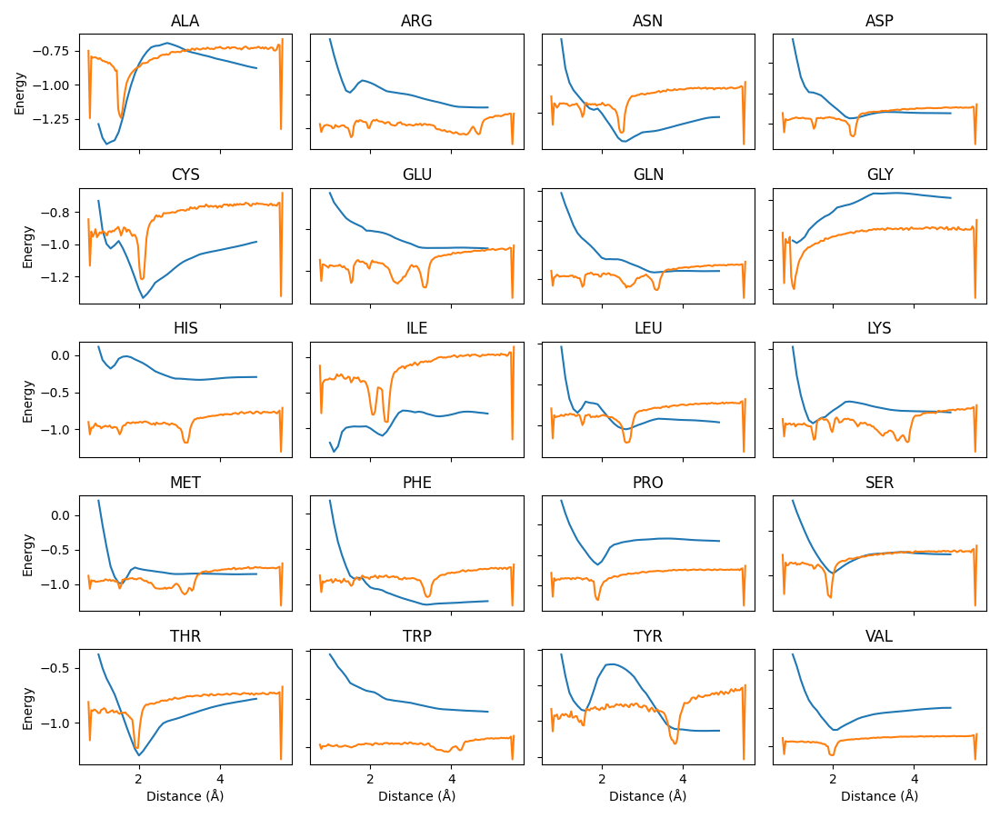

Figure A: All 20 possible Ca-sidechain potentials. Blue is our learnt force-field and orange is from Greener & Jones (2021)
Greener, J. G. & Jones, D. T. (2021), ‘Differentiable molecular simulation can learn all the parameters in a coarse-grained force field for proteins’, bioRxiv
doi:10.1101/2021.02.05.429941.